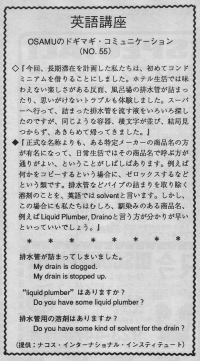

排水管が詰まりました。
Osamu and his wife wanted to stay in Hawaii for a long time so they stayed in a condominum for the first time. They had fun in the condominum that they couldn't have in the hotel. They had a plumbing problem. They went to the supermarket to look for some liquid to unclog the drain. But all the bottles looked the same and the English was hard so they gave up and went home. Draino is the most known name for unclogging sinks. You can say: "Do you have Draino?" or "Do you have something to unclog drains?" You can find draino in the section that has cleaning products. This is a common problem for Americans. They will try to fix it themselves first. If it's too hard, they will call a plumber. But plumbers are expensive and we try not to call them often.
今回、長期滞在を計画した私たちは、はじめてコンドミニアムを借りることにしました。ホテル生活では味わえない楽しさがある反面、風呂場の排水管が詰まったり、思いがけないトラブルも体験しました。スーパーへ行って、詰まった排水管を流す液をいろいろ探したのですが、同じような容器、横文字が並び、結局見つからず、あきらめて帰ってきました。
正式な名称よりも、ある特定のメーカーの商品名の方が有名になって、日常生活ではその商品名で呼ぶ方が通りが良いということがしばしあります。例えば何かをコピーするという場合に、ゼロックスするなどという類です。排水管などパイプの詰まりを取り除く溶剤のことを、英語では、solvent と言います。しかし、この場合にも私たちはむしろ、馴染みのある商品名、例えば、Liquid Plumber, Draino と言う方が分かりが早いといっていいでしょう。
排水管が詰まってしまいました。
My drain is clogged.
My drain is stopped up.
“liquid plumber” はありますか。
Do you have some liquid plumber?
排水管用の溶剤はありますか。
Do you have some kind of solvent for the drain?

| © 1995-2013 NACOS International Institute. All Rights Reserved. |